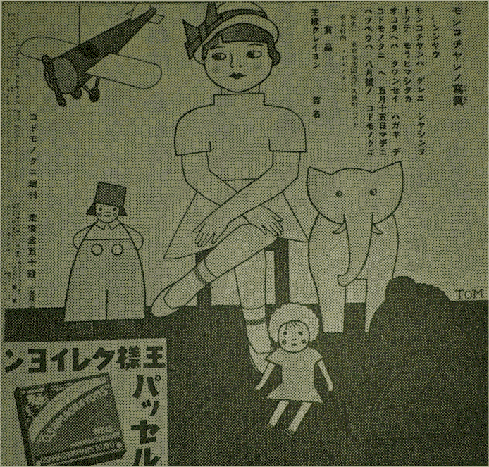

ボンコチヤントイフ赤イリボンノツイタカハイイバウシガアリマシタ。ボンコチヤンハモンコチヤントイフ女ノ子ノバウシデシタ。
モンコチヤンハ大ヘンモノヲ大切ニスル子デシタカラ、イツモ、ボンコチヤンヲブラツシデ、テイネイニハイテ、テイレヲイタシマシタ。ソレデ、ボンコチヤンハイツモ、アタラシイ時ノヤウニ美シウゴザイマス。
トコロガ、ボンコチヤンハモンコチヤンヲアマリスキマセンデシタ。ナゼトイツテ、モンコチヤンハマダ九ツデ、イタツテ小サイ子ダツタシ、ボンコチヤンハナルベク、セイノタカイ人ノアタマニノツカリタカツタカラデス。ソレデ、ボンコチヤンハイツモ、モンコチヤンノアタマニイヤイヤノツカリマシタカラ、アマリニアヒマセンデシタ。モンコチヤンハソンナコトハシリマセンカラ
モンコチヤンノオ
ニヤンコチヤンハオシヤベリデシタカラ、アルヒ、モンコチヤンニイヒマシタ。
「モンコチヤン アナタガボンコチヤンヲカブツテヰルカツカウハトテモヘンダワ。」
モンコチヤンハホントニカナシユウゴザイマシタカラ、ワア、ワアナキマシタ。ワンコチヤンハソレヲキイテ 一シヨニカナシクナツテ、ワン、ワンナキマシタ。
モンコチヤントワンコチヤンノナキゴヱヲキイテ、オ母サンハ、キツト、ワンコチヤンガモンコチヤンニホエツイタノダラウトオモヒマシタ。ソシテ、
「ワンコヤ、イタヅラシテハイケマセン。」トワンコチヤンヲシカリマシタ。キノドクナワンコチヤンデスネ。
デモ、オ母サンハモンコチヤンニモ、ワンコチヤンニモ、ニヤンコチヤンニモ、ソレゾレオイシイオ菓子ヲ下サイマシタ。
ソレカラトイフモノ、モンコチヤンハボンコチヤンヲケツシテカブラナクナリマシタカラ、オ父サント、オ母サント、オ姉サントオ兄サンハモンコチヤンニカウイヒマシタ。
「モンコチヤン、チツトモオカシクナイカラボンコヲカブリナサイ。」
モンコチヤンハボンコチヤンヲシブシブカブリマシタ。ボンコチヤンハボンコチヤンデイヤイヤモンコチヤンニカブサリマシタカラ、ソレハソレハオカシクミエマシタ。オ姉サントオ兄サンハ思ハズ、オナカヲカカヘテ笑ヒマシタ。
モンコチヤントボンコチヤンハ恥カシイヤラ悲シイヤラデ、メチヤ、クチヤニオコツテシマヒマシタ。ソシテ、モンコチヤンハジブンノヘヤニカケコンデシマヒマシタ。
ボンコチヤンハ、オゲンクワンカラ、ソトヘカケダシテイツテシマヒマシタ。
モンコチヤンノオ父サン、オ母サン、オ姉サン、オ兄サンハビツクリシマシタガ、ドウスルコトモデキマセンデシタ。
モンコチヤンハイクラオコツテヰテモオ
ボンコチヤンハ
ボンコチヤンハフカフカシタアタタカイベツドノ中ニハイリマシタケレド、ドウニモヘンテコデ、ネムレマセンデシタ。デ、カベノバウシカケニブラ下ツテ、グツスリネムリマシタ。
アクル朝、ボンコチヤンハ、ボーイサンニ「バウシノオ父サン」ノオ
ボンコチヤンハ電車ニノラウトシマシタケレド、イツパイノマンイン電車デ、ドウシテモノルコトガデキマセン。シカタナク、電車ノ屋根ニヨヂノボリマシタ。オオ、ソノサムイコト。ボンコチヤンハエリマキモ外タウモキテヰナカツタノデ、ハクシヨン、ハクシヨン、ハクシヨントクシヤミガツヅケサマニデマシタ。
ボンコチヤンハ、ボンコチヤンヲコサヘテクレタバウシヤサンノ「バウシノオ父サン」ノ所へ行キマシタ。オヂイサンハボンコチヤンノクシヤミガドウシテモ、トマラナイノデ、町デ、有名ナ「モノシリウササン」トイフ、オイシヤサマヲヨビマシタ。オイシヤサマハヨクヨク、シンサツシテ、ソレカラ、
「ボンコチヤン、アナタノ病気ハモンコチヤンノ所ヘカヘレバスグナホリマス。」トイヒマシタ。
ボンコチヤンノクシヤミハモツトモツトヒドクナリマシタ。アマリクルシイノデ、ボンコチヤンハオイシヤサマノイツタヤウニ、ビヨウキガナホルノナラ、モンコチヤンノオ
ソレカラ、オヂイサンハ、ソノ箱ニモンコチヤンノオトコロトナマヘヲカイテ、郵便局ニモツテイツテ、切手ヲハリマシタ。局ノ人ガソレニポンポント消シ印ヲオシマシタ。
郵便配達ノダテウサンハ、キシヤヨリモハヤクカケテ、ソレヲ、モンコチヤンノオ
ボンコチヤンハモンコチヤンノトコロヘ カヘツテ来ルト、スグニ、クシヤミガトマツテ、モトノヤウニ元気ナボンコチヤンニナリマシタ。ミナサン、ナゼダカオワカリニナリマスカ。ソレハ、ハジメニモ申シ上ゲタ通リ、モンコチヤンハ大ヘンモノヲ大切ニスル子デスカラ、ボンコチヤンニツイテヰタホコリヲ、テイネイニブラツシデハイテヤリマシタカラ。
ボンコチヤンハモンコチヤンヲイヤダナンテオモツタコトヲ心カラコウクワイイタシマシタ。ソシテ、モンコチヤンノアタマニデキルダケカツカウヨクカブサリマシタカラ、ソレハソレハヨクニアフヨウニナリマシタ。
アマリヨクニアフノデ、オ母サンハ
モンコチヤンノ写真
ケンシヤウ
モンコチヤンハ ダレニ シヤシンヲ トツテ モラヒマシタカ。
オコタヘハ クワンセイ ハガキ デ コドモノクニ ヘ 五月十五日マデニ ハツペウハ 八月号ノ コドモノクニ
ケンシヤウ
モンコチヤンハ ダレニ シヤシンヲ トツテ モラヒマシタカ。
オコタヘハ クワンセイ ハガキ デ コドモノクニ ヘ 五月十五日マデニ ハツペウハ 八月号ノ コドモノクニ
裏表紙